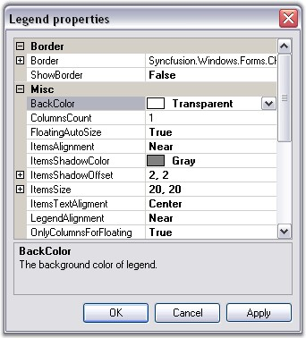

The legend is represented by the ChartLegend type.
Default Legend
By default, a custom ChartLegend instance gets added to the Legends list in the control. You can access this default legend as follows.
|
[C#]
// Changing the position of the default legend this.chartControl1.Legends[0].LegendPosition = Syncfusion.Windows.Forms.Chart.ChartDock.Top; |
|
[VB.NET]
' Changing the position of the default legend Me.chartControl1.Legends[0].LegendPosition = Syncfusion.Windows.Forms.Chart.ChartDock.Top |
Adding Custom Legends
You can add custom legends to the chart through the Legends list as follows:
|
[C#]
// Changing the position of the default legend ChartLegend legend2 = new ChartLegend(chartControl1); legend2.Name = "MyLegend"; chartControl1.Legends.Add(legend2); |
|
[VB.NET]
Dim legend2 As New ChartLegend() legend2.Name = "MyLegend" chartControl1.Legends.Add(legend2) |
You can then add custom legend items into the ChartLegend through the CustomItems property as explained in the next topic (ChartLegendItem).
You can also associate a ChartSeries to a custom ChartLegend as follows (then the legend item corresponding to that series will be rendered within the specified legend):
|
[C#]
// Associate legend1 with series1 series[0].LegendName = "legend1"; // Associate legend2 with series2 series[1].LegendName = "legend2"; |
|
[VB.NET]
' Associate legend1 with series1 series[0].LegendName = "legend1" ' Associate legend2 with series2 series[1].LegendName = "legend2" |
Legend Look and Feel
Here are some common properties you could use to customize the overall legend appearance:
|
ChartLegend Property |
Description |
|
BackColor |
Gets / sets the background color of the legend. The default value is Transparent. |
|
VisibleCheckBox |
If set to true, a checkbox will be displayed beside each legend item. And if this checkbox is unchecked the corresponding series will disappear from the chart plot. Default is false. |
|
Windows | |
|
Border |
Gets / sets the border style of the legend. ShowBorder should be true. |
|
ShowBorder |
Specifies whether a border should be drawn. By default it is set to false. |
|
Font |
Specifies the font that is to be used for the text rendered in the legend items. The default font style is Verdana, 8, Regular. |
|
BackInterior |
Sets the interior appearance for the legend. This overrides the BackColor property. |
|
BackgroundImage |
Sets the background image for the legend. This setting overrides the BackInterior property settings. |
|
BackgroundImageLayout |
Sets the layout for the background image. |
Legend Positioning
The legend positioning can be affected in the following ways.
|
ChartLegend Property |
Description |
|
Position |
Specifies the position relative to the chart at which to render the legend. · Top - above the chart · Left - left of the chart · Right - right of the chart · Bottom - below the chart · Floating - will not be docked to any specific location(default setting) |
|
LegendAlignment |
When docked to a side, this property specifies how the legend should be aligned with respect to the chart boundaries. |
|
LegendPlacement |
Specifies the placement of a legend in a chart. It can be placed Inside or Outside the chart area using ChartPlacement enum. |
|
DockingFree |
If set to true, the legend will be floating and cannot be dragged and docked to the sides. |
|
Behavior |
Specifies the docking behavior of the Legend. · Docking - It is dockable on all four sides · Movable - It is movable · All - It is movable and dockable · None - It is neither movable nor dockable |
|
FloatingAutoSize |
Specifies whether to determine the size automatically or not, while floating. |
|
OnlyColumnsForFloating |
The legend items will be displayed vertically in columns when floating. |
|
RowsCount |
Specifies the number of rows in which the legend items should be rendered. |
|
ColumnsCount |
Specifies the number of columns in which the legend items should be rendered. |
 Note:
Note that the user can drag the legend around during run time. He can
dock it to the sides if docking is enabled. Docking behavior is controlled by
Behavior property which is described in the above table.
Note:
Note that the user can drag the legend around during run time. He can
dock it to the sides if docking is enabled. Docking behavior is controlled by
Behavior property which is described in the above table.
Changing Legend Properties at Run Time
The Legend's look and feel can also be customized during runtime. Double-clicking legend's text will pop up the below properties window. Properties set through this dialogue can be applied to the chart.
Note: These settings will be lost when the
application is closed.

Figure 280: Legend Properties Dialog Box
See Also